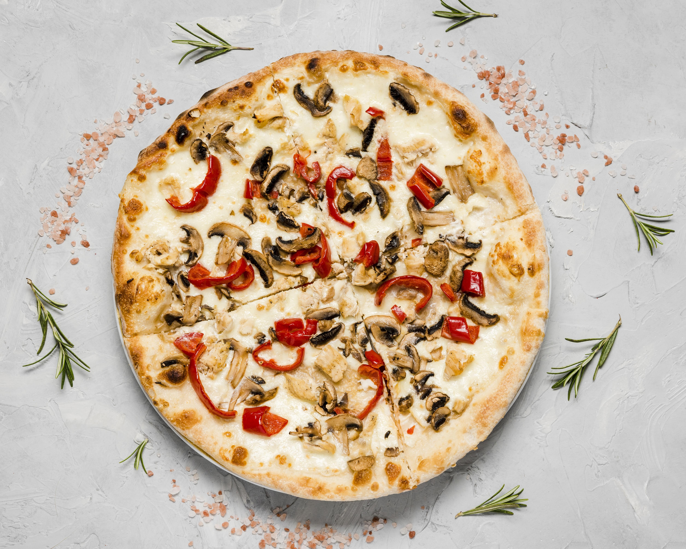
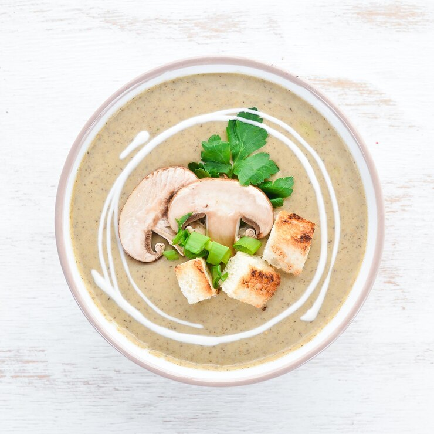
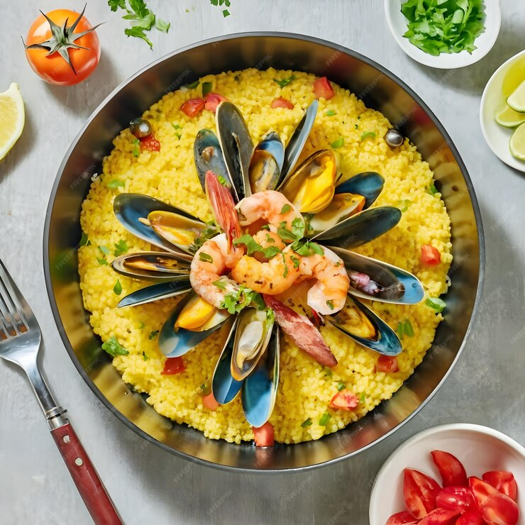

| Название блюда | Моя оценка | Ссылка на рецепт | Изображение |
|---|---|---|---|
| Спагетти | 4.2/5 | Ссылка на рецепт | |
| Пицца | 4.9/5 | Ссылка на рецепт |  |
| Суп-пюре из шампиньонов | 4.4/5 | Ссылка на рецепт |  |
| Паэлья с дарами моря | 4.6/5 | Ссылка на рецепт |  |
| Тирамису | 4.7/5 | Ссылка на рецепт | |